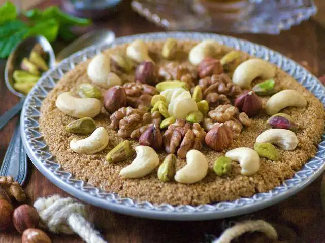

Algerian Tamina

Description
it is presented sprinkled with cinnamon. This tamina is a pure delight, in addition its realization is to be worn by everyone, the only technical point is the monitoring of the cooking of the semolina. It must take on a beautiful golden color without it burning.'
Notes: This Algerian cake is traditionally served during religious holidays or happy events, such as a birth or wedding. A recipe close to this one: the Tunisian zrir, which is prepared with dried fruit flours.
Ingredients
- 500 grams medium wheat semolina
- 150 grams butter
- 150 grams honey
Steps
- Sift the medium semolina, grill it lightly in a tagine (or wok).
- Set aside, melt the butter over low heat and then add the honey and semolina.
- Pour the semolina while stirring to mix the ingredients intimately.
- When the preparation detaches from the walls of the wok or tagine, remove from the heat. The tamina must have the consistency of a cake batter.
- Pour the warm preparation into small plates, evening it out, decorate with hulled and roasted almonds or colored dragees.
- The preparation can be sprinkled with a teaspoon of semolina, after the cake has cooled.